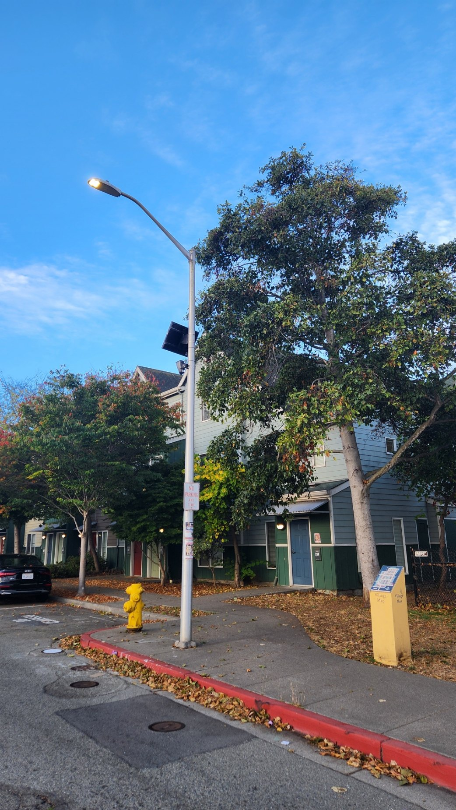
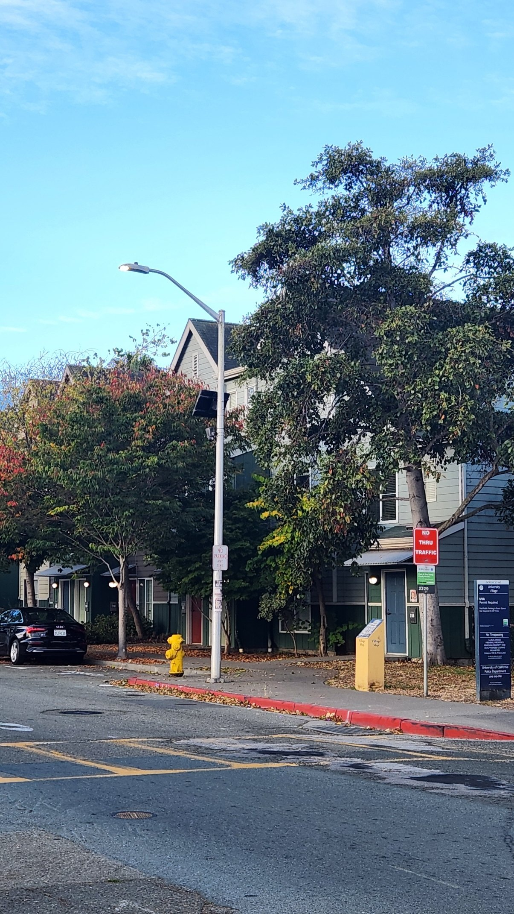
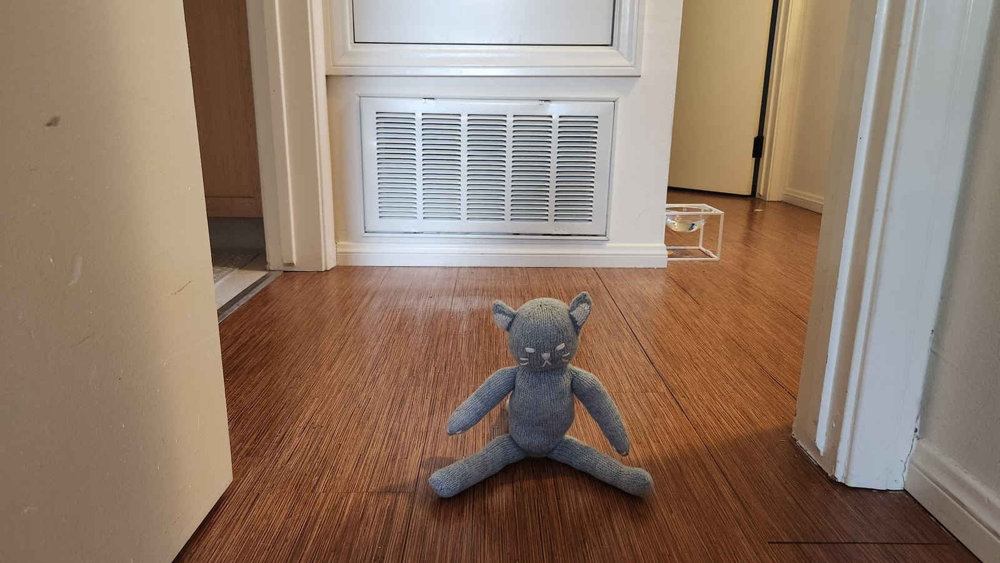
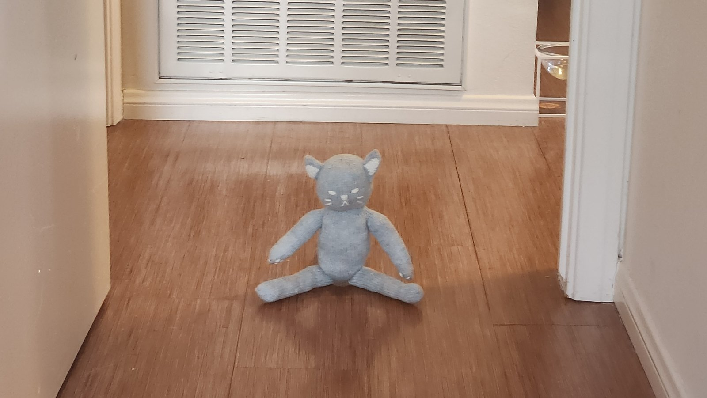
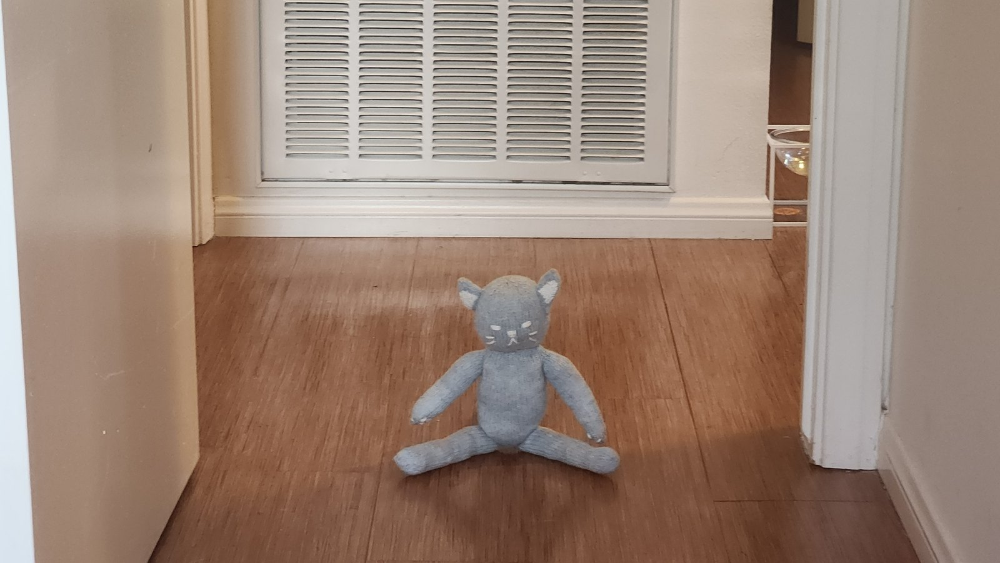

CS280A · Project 0
Becoming Friends with Your Camera
An introductory photographic study of how camera distance, focal length, and movement change what the camera lens sees.
Part 1
The Selfie Comparison
Two portraits framed to the same face size. One shot at arm's length (~30 cm), the other from about 2 m away and zoomed in. Up close, the distance ratio between the nose and the ears is large, so the nose and forehead balloon outward. Stepping back flattens those ratios and gives more natural proportions photographers rely on.
Part 2
Architectural Perspective Compression
The same lamp post and building shot two ways. From far away with heavy zoom, the scene looks flattened. From up close with no zoom, the near-to-far distance ratio scene feels deep. Perspective is set by where the camera stands.


Part 3
The Dolly Zoom
The cinematic "Vertigo" effect. The camera walks backward while zooming in, so the subject stays the same size while the background appears to swell and warp behind it. The GIF below shows the three frames.


